Biblioteca
Artigos técnicos, protocolos de campo, fichas e planilhas organizados por tema, com filtros por cultura e um banco de fotos de campo.
Bem-vindo à MelonMundi
Somos um grupo multidisciplinar com dedicação exclusiva ao melão e à melancia. Assessoramos do planejamento da fazenda ao transporte do produto — e reunimos todo esse conhecimento em um acervo digital com biblioteca técnica, simuladores e aplicativos. Também capacitamos equipes no próprio campo.
Tudo em um só lugar
Um login único abre a porta para conteúdo técnico, ferramentas de cálculo, aplicativos e capacitação — todos construídos a partir da nossa experiência de campo em melão e melancia.
Artigos técnicos, protocolos de campo, fichas e planilhas organizados por tema, com filtros por cultura e um banco de fotos de campo.
Ferramentas on-line para consultar, calcular e simular cenários: fitossanidade, produtividade, solo, irrigação, fertirrigação, mistura de fertilizantes e metas de caixas.
Programas para instalar no computador. O AgroJornal cria, acompanha e imprime as comandas eletrônicas de aplicação por fazenda e parcela, com os dados guardados no próprio computador.
Dashboards e indicadores que consolidam informações autorizadas e transformam dados de campo em apoio à decisão.
Treinamento de equipes nas próprias fazendas, com teoria aplicada ao manejo e atividades práticas acompanhadas pela equipe técnica.
Emissão de certificados após a validação das atividades práticas pela equipe técnica — não apenas pela presença.
Conhecimento organizado
Conteúdo produzido e revisado por quem está no campo, estruturado em três formatos que se complementam: o artigo explica, o protocolo padroniza e a ficha vai para a mão do avaliador.
Textos sobre manejo da cultura e fitossanidade, com ilustrações próprias, fotos de campo, exemplos resolvidos e referências.
O passo a passo de cada avaliação, com o que levar, como amostrar e como anotar, para que todos na fazenda façam do mesmo jeito.
Fichas para imprimir e preencher na área, com exemplos preenchidos e, em várias delas, a planilha que faz as contas.
Conteúdo disponível para usuários autenticados no Acervo MelonMundi.
Contas e decisões em minutos
Rodam direto no navegador, no computador ou no celular. No AgroFito, AgroFruta, AgroSolo e AgroIrriga, os dados valem só durante a sessão; o AgroFerti, o AgroMix e o AgroMeta guardam o trabalho no navegador do seu aparelho, só para você, para continuar depois. Nada do que você digita é enviado à MelonMundi.
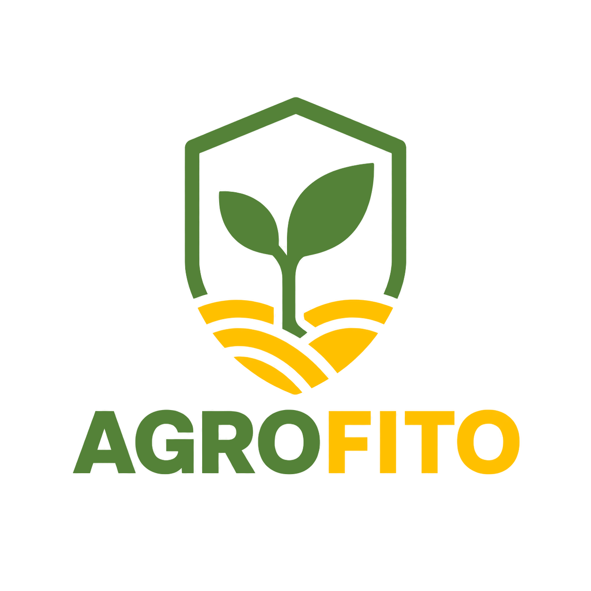
Consulta de produtos fitossanitários registrados no AGROFIT/MAPA, com foco em melão, melancia e todas as culturas.
Base oficial AGROFIT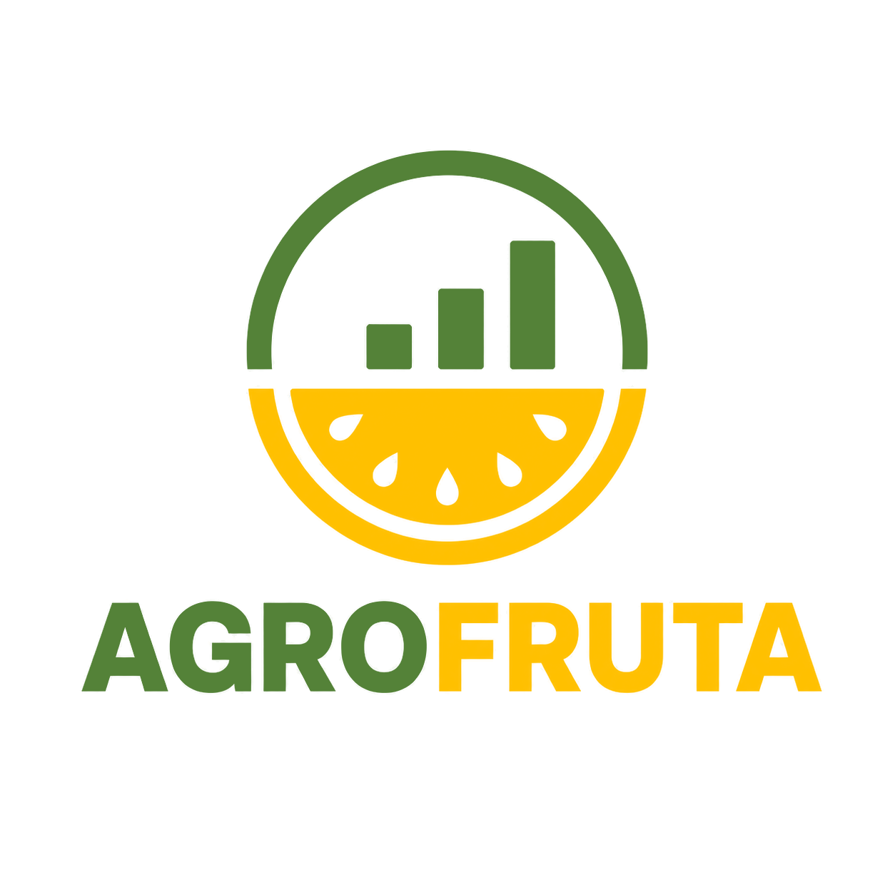
Estimativa de produtividade, receita bruta e pegamento a partir da contagem de frutos por parcela.
Produtividade e rentabilidadeInterpretação de análise de solo, faixas agronômicas, calagem, gessagem e relatório da sessão em PDF.
Interpretação e recomendaçãoCálculo de lâmina, tempo de irrigação e volume aplicado por fase fenológica de melão e melancia.
Planejamento de irrigação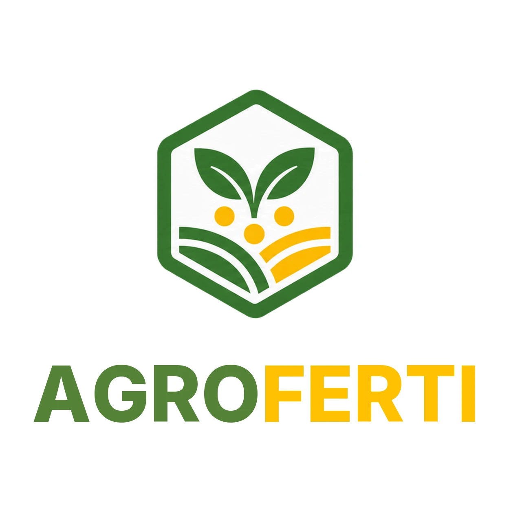
Planejamento da fertirrigação pelo ciclo da cultura, com fontes, doses diárias, balanço de nutrientes, custos e relatório em PDF.
Fertirrigação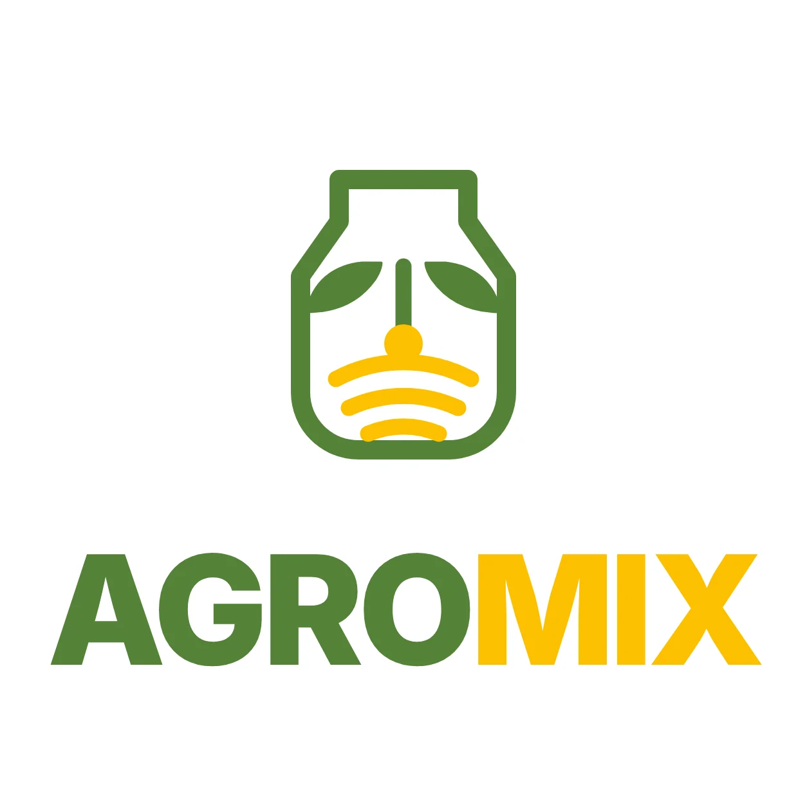
Mistura de fertilizantes por dose diária, com o total por hectare e as relações entre nutrientes comparadas ao ideal de cada fase.
Mistura de fertilizantes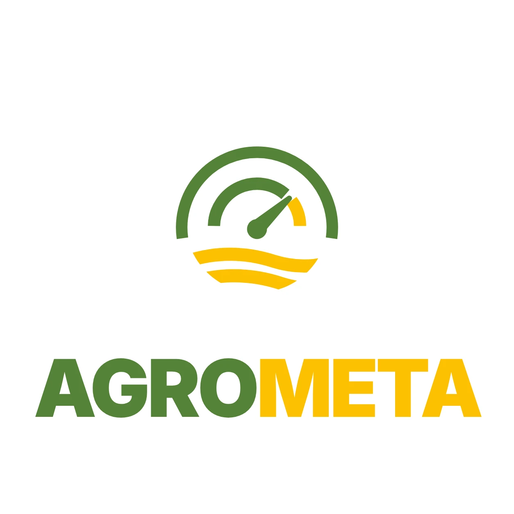
Previsão de caixas comerciais por hectare nos segmentos de mercado de melão e melancia, comparada com a meta.
Caixas e metaInterfaces pensadas para o dia a dia: poucos campos, resultado imediato e leitura confortável no celular.
Pesquise por marca comercial, ingrediente ativo ou classe agronômica e refine por cultura. A base do AGROFIT/MAPA é atualizada continuamente e mostra também o prazo de segurança de cada produto.
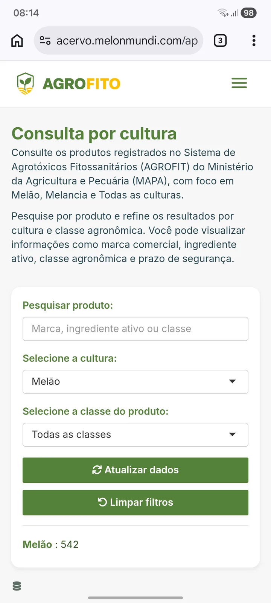
Informe os dados da parcela — espaçamento, contagem de frutos, peso médio e preço por faixa — e compare cenários de produtividade, receita bruta e pegamento entre parcelas.
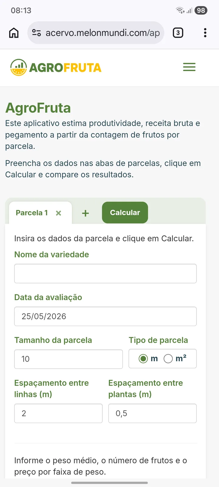
Registre amostras, confira valores digitados e calculados, interprete faixas agronômicas, estime calagem e gessagem, avalie relações entre nutrientes e gere um relatório em PDF da sessão.
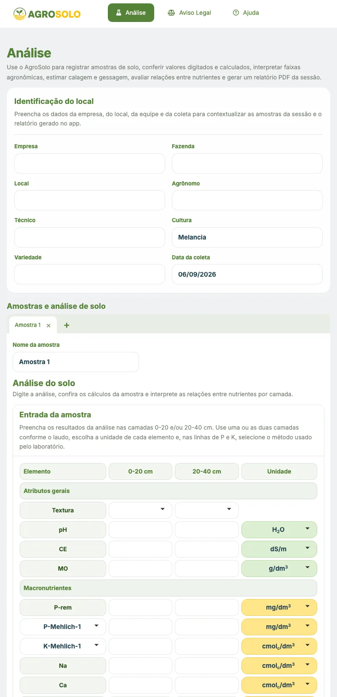
Informe a área e os parâmetros do sistema, ajuste as fases fenológicas de melão ou melancia e obtenha lâmina, tempo de irrigação e volume aplicado ao longo de todo o ciclo.
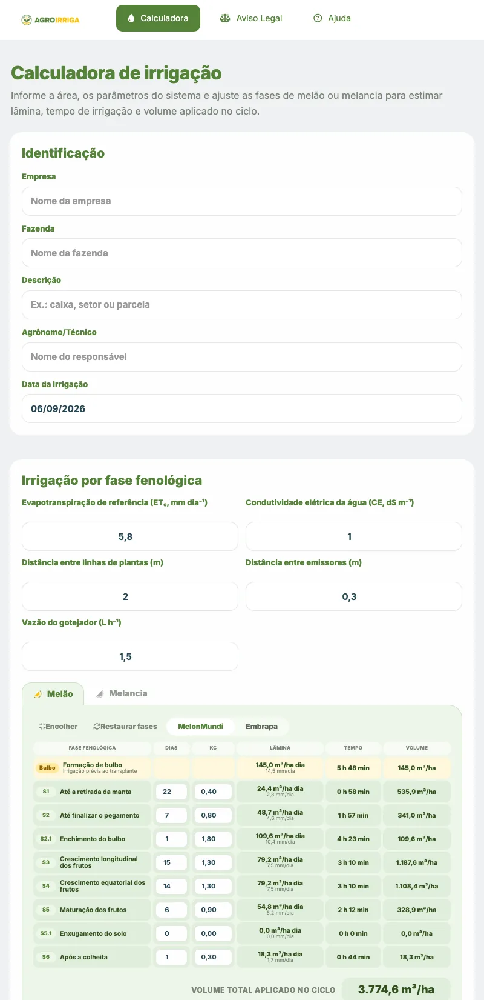
Monte o plano de fertilização a partir do cultivo, do ciclo, da irrigação e da demanda de nutrientes. Escolha as fontes, distribua as doses na programação diária e confira o fornecido, a demanda e os custos.
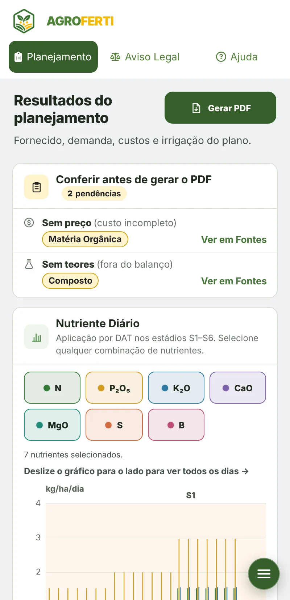
Informe a dose diária de cada fonte e veja o total por hectare e os nutrientes fornecidos. As relações K₂O/N, CaO/MgO, K₂O/CaO e N nítrico/N aparecem comparadas com o ideal de cada fase.
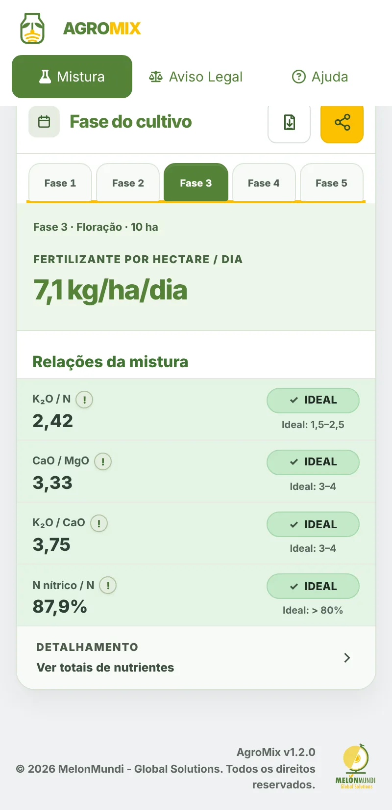
Informe a produção, a distribuição por calibre e as perdas e veja as caixas comerciais por hectare enquanto digita, com a diferença para a meta e os frutos necessários para batê-la.
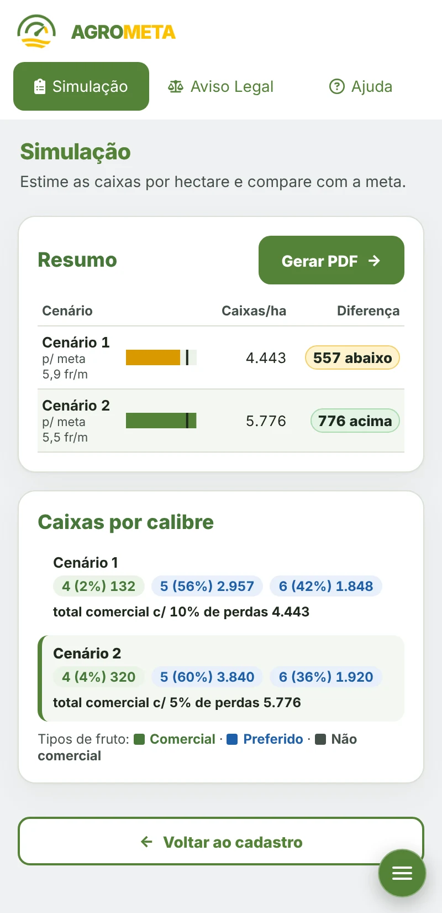
Capacitação técnica
Capacitamos técnicos, monitores e equipes de campo na própria fazenda, unindo teoria aplicada e prática nas áreas de produção de melão e melancia. Cada turma tem as suas datas, e o material de estudo fica no Acervo, ligado aos artigos, protocolos e fichas da Biblioteca e aos simuladores.
O certificado é emitido depois que a equipe técnica valida a atividade prática — não pela simples presença.
O site público apresenta o que produzimos. O conteúdo completo fica no Acervo, liberado por autenticação.
Navegue pelo site e veja as soluções técnicas que desenvolvemos para melão e melancia.
Com uma só conta você entra no Acervo e encontra a biblioteca, os simuladores, os aplicativos e a capacitação liberados para você.
Consulte, calcule e decida no computador, no tablet ou no celular, a qualquer hora.
Acesse o Acervo MelonMundi ou conheça melhor o grupo por trás dele.
© 2026 MelonMundi – Global Solutions. Todos os direitos reservados.
Desenvolvido por